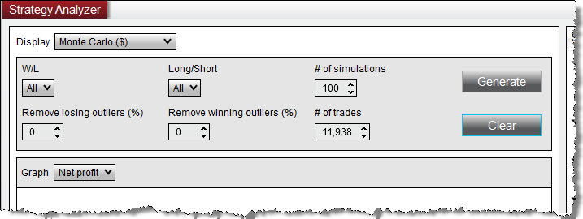
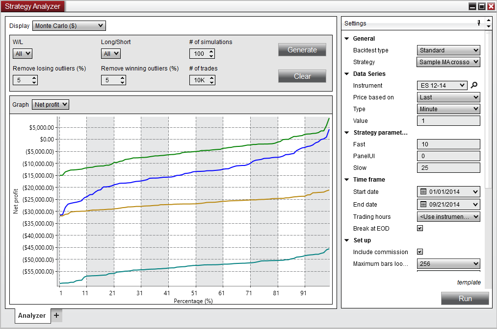

|
<< Click to Display Table of Contents >> Running a Monte Carlo Simulation |


|
Running a Monte Carlo Simulation
|
<< Click to Display Table of Contents >> Running a Monte Carlo Simulation |
|
The following page covers how to set up and run NinjaTrader's Monte Carlo Simulation
 Understanding Monte Carlo simulation
Understanding Monte Carlo simulation
What is Monte Carlo Simulation?Monte Carlo Simulation is a mathematical technique that uses repeated random sampling ("sampling with replacement") to compute a range of possible results with their respective probability. NinjaTrader runs Monte Carlo Simulation by randomly combining the trade results in a defined series of simulations. A graph of the results are plotted with the statistic values or Profit/Loss on the Y - axis and the probability on the X - axis as a percentage.
Why use Monte Carlo Simulation?Although a backtest of a NinjaScript strategy may produce profitable results, those results may have just been due to good luck. In real life, you may have a string of bad trades that can wipe out the account before the good trades appear, therefore it would be helpful to understand the probability of such a string of bad trades. Monte Carlo Simulation will randomize your trade results over and over again in multiple simulations to provide you with a normal distribution of simulation performance. The trader can use this information to see the top or bottom percent of trades (outliers) that will cause the most variability in the strategy as well as the most statistically probable results. |
 How to run a Monte Carlo simulation
How to run a Monte Carlo simulation
Running a Monte Carlo SimulationTo run a Monte Carlo Simulation:
1.Open the Monte Carlo Simulation display (see sub-section above for how to open) 2.Set desired simulation parameters and press the Generate button.

Monte Carlo Simulation ParametersThe following parameters are adjustable when running a Monte Carlo Simulation:
|
 Understanding the Monte Carlo Simulation report
Understanding the Monte Carlo Simulation report
Monte Carlo Simulation ReportThe results of the Monte Carlo Simulation are displayed in a graph below the parameters.

X-AxisThe horizontal axis of the Monte Carlo Simulation graph shows the percentage of simulations that have fallen below the Y - axis value. For example, if you run a Monte Carlo Simulation setting the # of Simulations to "100" and using the Cumulative Profit graph, the intersection of the 50% X - value and the associated Y value means that 50 of your simulations will be below that cumulative profit/loss value, and oppositely the remaining 50 simulations will have a greater cumulative profit/loss. This type of report allows you to analyze if the risk/reward ratio between worst and best case scenarios is acceptable or not.
Y-AxisThe vertical axis of the Monte Carlo Simulation graph displays the measured unit for the Graph item selected such as Profit/Loss, statistical information, or time and changes based on the Graph selection. |